Deliberate Latent Reasoning for Sequential Recommendation / 面向序列推荐的审慎潜在推理
- 作者为 Haobo Zhang、Qiannan Zhu、Yutao Zhu、Zhicheng Dou。一作来自中国人民大学高瓴人工智能学院，合作机构为北京师范大学。
- arXiv v1 首次提交于 2026 年 11 月 4 日 13:47:30 UTC，北京时间当日 21:47:30。本轮核验原始预印本，作者独立代码仓库未核验。论文原文
DESRec 把序列模型的中间推理状态用于训练监督。作者用真实的下一物品找出最贴近标签的状态，把该状态对整张目录的打分分布教给固定预算的最后一步。模型还把历史中每一段的末位置状态重新送入推理过程，帮助末态同时读到多个阶段的兴趣。
现有序列推荐器通常给所有用户配置同样多的潜在推理步骤。固定深度可能让简单历史经历过度推理，也可能使复杂历史得不到充分处理。如何在训练中利用样本最优推理深度的差异，并保持推理端固定步数的简单性，是论文试图解决的问题。
1. 背景和问题
1.1 从最后一个历史位置，到反复读写兴趣状态
序列推荐把用户在若干物品上的交互按时间排好，用已有前缀预测下一次正反馈对应的物品。输入可以由学习到的物品标识表示组成，也可以先编码标题、描述和类目，把文本语义映射到候选向量。编码器让历史事件彼此交换信息，常见做法是取最后一个有效位置作为用户表示。候选和用户向量的匹配分数同时负责决定物品是否入围及其相对顺序。这样的读出设计在工程上简单，所有候选共享一份用户向量。它的一个限制是，最后位置承担了压缩整段历史和预测下一项两种工作，较早发生、却对下一次选择有影响的行为，只能靠编码器把相应信息带到该位置。
比如一个用户先集中看过数码配件，最近几次操作又切到家庭用品。一次后续点击的解释可能是最近一轮浏览继续，也可能回到较早的购买计划。即使两名用户最后都点了同一件物品，前面兴趣在时间上的排列不同，也会改变下一项的排序。单纯把编码器加宽或加深，会同时提高所有请求的每次编码成本。潜在推理采用另一种计算组织方式，先编码历史，再把读出的状态作为新增输入，运行同一模型以生成下一状态。它能逐轮改写候选分数，也能让固定模型在最后一个真实交互之外增加几个可计算的位置。这里的潜在状态是连续向量，没有直接对应的自然语言解释，用户也看不到一条显式思维链。
ReaRec 已展示了连续状态迭代可以作为推荐器的训练结构。它的 ERL 以集成和正则方式利用多步状态，PRL 通过对比目标及温度调整改善多步表示。DESRec 进一步追问，若中间每一步对目标物品的相似度不同，能否把表现最好的一步直接当成该样本的监督来源。这个问题与“增加步数是否总有帮助”只有部分重合。即使有些样本第一个状态已经能把正例排得很高，全局模型依然可能需要更多迭代来处理其他样本。再往后算一步，也可能提高若干相似负例的分数，让真正标签的名次下降。只看全数据的最后一步均值，会把这些反向变化加在一起。
1.2 用标签回看深度，需要区分两种最优定义
论文用 Yelp 与 Amazon Baby & Products 说明不同历史对应的峰值步有差异。其动机统计从一个潜在推理模型的多步输出中回看每个样本，使用排序指标找出较优步。方法真正训练时使用标签嵌入与状态的余弦相似度做选择，计算代价更低，含义也不同。比如正例的余弦从较低变得较高，仍可能有大量同类候选同时被抬高，正例在候选列表里的名次不一定同步改变。反过来，余弦降低但负例掉得更快时，排序可以变好。理解这一点能避免把动机图上的“最佳排名步”与损失函数选出来的“最贴近正例步”混为一个优化对象。
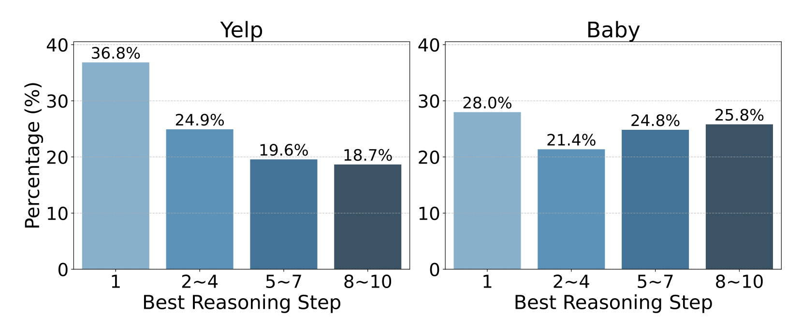
左图和右图分别统计 Yelp 与 Baby 样本，纵轴是落入指定最优步组的样本比例，横轴从单独的第一步分到第二至第四、第五至第七和第八至第十步。Yelp 第一组占百分之三十六点八，末组占百分之十八点七。Baby 的对应数字是百分之二十八与百分之二十五点八，后一组并未像 Yelp 那样明显变小。柱宽相同，但第一组只有一步，其余每组包含三步。比较柱高只能看样本落入组的总量，不能直接把末组的高度分给每个具体深度。原图以最高 NDCG 定义事后最优步，已经用到了真实标签和候选排名，线上请求发出时拿不到这组信息。图中也没有按用户历史长度拆出分布，因而不能推断长历史必然需要深推理，或者短历史都可以在一步时退出。它支持的直接结论是，若统一选择一个全局步数，样本层面会错过一部分更优状态，这给训练时分配不同状态的监督提供了动机。
训练可见的下一物品既给了一个观测目标，也形成了清楚的可用性边界。在真正预测之前，模型只知道历史，未来标签只能在训练样本上用于更新参数，或在测试结束后用于诊断。部署时若再通过相似度选择最优步，就需要提前知道自己将要预测的答案，造成循环。因此，论文把变化留在训练目标，所有用户仍沿着一个配置好的推理预算运行。这样仍需为每步的编码和缓存付费，但单个批次可以沿共同的迭代次数推进，不需要新增一个判断是否退出的模型，也不要求为每个请求管理动态停止信号。用户间可变化的是从历史产生的里程碑数量，以及训练时哪一步承担监督。
动机还涉及偏好阶段如何表达。只向最后位置追加自身的旧状态时，每一轮都从一个已压缩的视角重新开始，即使注意力理论上能回看全部行为，也未显式提醒模型哪个局部阶段应该独立保留。窗口末状态提供了一组较短的、按顺序排列的再读入位置。它们对应连续若干行为的末端，可能同时携带编码器聚合的更早信息。因此，称它们为“某一时期的兴趣线索”比较贴切，不能当成相互独立、能准确标注意图转折的分段。使用固定交互条数切窗，与使用自然日、会话或主题变化切分也会产生不同的表示。论文在公共离线数据上选择了前一种定义，把后两种留给后续检验。
这种设计能拆成两个容易被混淆的假设。第一，训练监督是否能把较好中间态的相对打分结构保留到末态。第二，给迭代链增加历史里程碑是否真的补回了旧兴趣信息，而非仅仅给编码器增加一些计算位置。对应证据分别来自去掉蒸馏和替换选步的实验，以及去掉窗口机制、改用均值或最大值聚合的实验。仅凭主表的提升无法判断两条假设贡献各有多少。更进一步，使用结果标签选出内部状态属于训练时额外监督，和给输入增加行为文本、换更大的文本编码器、扩展候选集合，都是不同的改变。该论文的有力比较应当首先在固定骨干、固定候选与相近推理预算内进行。
2. 方法
2.1 潜状态自回归
作者先把任务写成从交互前缀预测下一个物品，再以 SASRec 为例展示怎样把最后位置读出变成连续迭代。每个物品输入由向量与可学习位置编码组成，经同一个序列编码器变成上下文化表示。原始模型可以直接读取历史末端。潜在推理则把这个表示追加到序列尾部，使用另一套位置嵌入，避免物品位置和推理位置的索引语义重叠。新增位置送进同一个编码器，读取新的最后状态，作为下一轮输入。本文的自回归表示按照步骤顺序递推，每次生成的是浮点向量，无需选择词元，也不用产生自然语言理由。
符号解释：第一式保留原论文式一所写的前缀预测目标，具体损失在后文写成对数概率。$S_{1:t}$ 是已知的前 $t$ 个行为，$i_{t+1}$ 是其后一项，$n$ 是输入长度，$\Theta$ 是推荐器参数。$e_t$ 与 $p_t$ 是物品和位置向量，$X^{(0)}$ 是进入编码器的序列，$f$ 是由注意力与前馈层组成的骨干，$H^{(0)}$ 是各位置的上下文化输出。
符号解释：$s$ 是追加轮次，$h^{(s-1)}_{n+s-1}$ 是上一轮序列的末位置，$p'_s$ 取自推理位置表，分号表示拼接位置。$r_{s+1}$ 取新的末状态。式五把零次追加时的末态记作 $r_1$，后面的选步与排序章节用 $r_T$ 指最终读出，符号的计数起点并不完全一致。复现应明示是否把基础读出算进候选步，避免改了训练选项集合却还声称步数一致。
符号解释：$I$ 是物品目录，$i^+$ 为真实下一项，$T$ 是预设迭代深度，点积是式六的打分。该式是基础潜在推理的末态监督，实际 DESRec 目标在后文改用选出状态的余弦分布。论文在式六附近行文也提到余弦，公式显示为点积。只有向量都规范化时两者才一致，代码实现未核验，笔记保留这个口径差异。
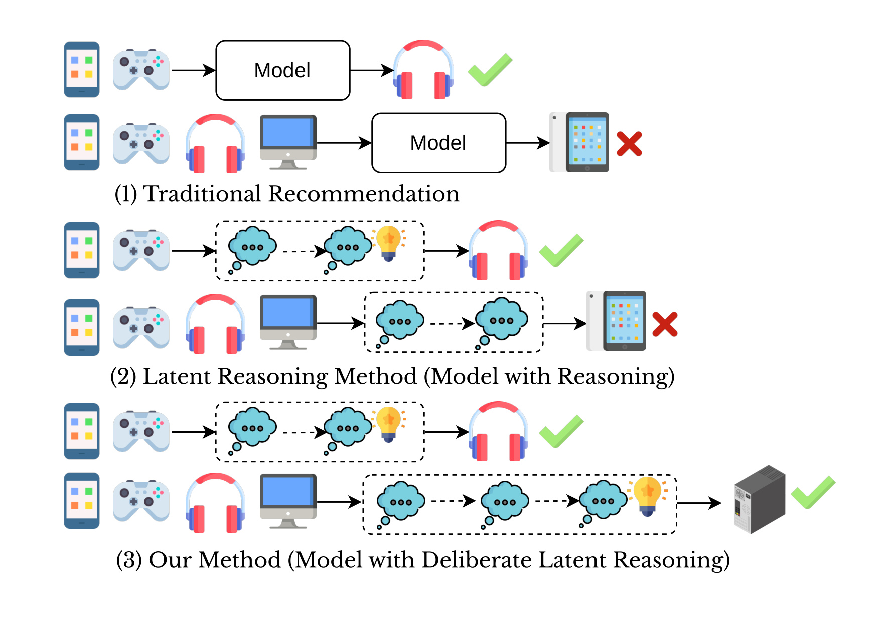
第一组把真实历史直接送进推荐模型，随后读出一个物品，表示传统序列模型从末态预测。第二组在历史和输出之间增加一串气泡，气泡对应可迭代的潜在计算，多个气泡在处理过程中承担信息传递。第三组给两条不同历史画出不同数量的气泡，强调应让样本在训练时使用最有信息的深度。右侧的勾和叉只是举例说明推荐是否命中，原图没有交互记录、候选分数或对照样本规模。尤其容易误读的是第三组第二行画得更长，像是系统线上能够给它自动多算几步。结合图三的右面板和方法正文，部署时实际只读统一的末步。这里变化的是训练中的有效监督状态，以及输入历史能产生多少个里程碑。把两个图连起来看，图一提出了“每个样本需要的信息处理深度可能不同”的直觉，图三才定义实现：利用标签给训练状态打分、选择教师，再训练同一模型的末态。模型能否真的识别两个用户在各步所需的计算，还需测试时基于无标签信号的停止实验，而论文主结果没有引入这种决策。该图中的传统推荐、已有潜在推理和本文方法对应三类机制比较，图标示意无法单独为其中任一机制提供效果量。第一组的简单输入已经命中，也说明额外迭代的价值取决于任务样本。三个示意没有展示所有方式使用的模型大小、训练资源和候选规模。要验证这种示意中的收益，至少应固定历史、候选和骨干，将迭代新增的向量位置与普通历史汇总位置分别消融。
2.2 最优步选择与自蒸馏
给定一个训练样本，先展开全部计划的潜在步骤，再比较各个候选状态和正例物品向量的余弦。选择最大的一步后，只将其用作该样本的教师。这个过程用的是与标签的相对接近程度，选择函数本身是离散索引。与学习一个只看历史就能预测合适深度的控制器相比，这里省去了预测深度的额外误差，但只在能取得标签的阶段成立。若最后一步恰好已是教师，蒸馏分布相同，额外约束可以自然为零。若中间较早状态最优，则可以把对应的排序结构传给最后一步，即便测试时最终仍要完成全部迭代。
符号解释：$o_s$ 是第 $s$ 个潜状态和真实正例的余弦，$\operatorname{sim}$ 表示余弦函数，$s^*$ 是被选出的训练步。$r_s$ 来自同一模型的递推，$e_{i^+}$ 来自相同物品表示空间。这一步用正例相似度确定训练教师，无需先计算每一步的全目录名次。论文没有明确相同相似度如何打破并列，复现时需单独固定规则。
符号解释：$b$ 指教师或学生步骤，$u$ 是用户，$j$ 遍历同一个目录。温度 $\tau$ 控制相似度经过归一化后的尖锐程度，减小温度会放大分数差。$P_b(I\mid u)$ 是整组物品的分布向量。前向 KL 的第一项是被选步，第二项是末步。教师将分数结构传给学生，接近标签之外，教师对几个相似负例给出的相对概率也能产生训练信号。与直接最小化两个隐藏向量的距离相比，这个目标只要求物品打分分布一致，让空间中与排名无关的表示差异保留下来。候选目录越大，计算及存放两组打分的代价越明显。若用采样负例降低训练开销，必须保证两支共享采样并重新检查归一化范围，所得目标会与论文的全目录式有差异。论文给出了蒸馏方向，未在公式中声明是否对教师分支停止梯度，因此不对实际梯度实现作肯定判断。
2.3 渐进偏好提取及训练推理
渐进偏好提取先读取原始交互编码，使用固定窗口长度与步幅切出若干段。每段从窗口的最后一个位置取一条向量。这条向量已经历骨干注意力，可以包含窗口之外的前缀或在双向骨干下包含更广的已知历史。原方法也没有检测兴趣切换的显式边界，因此“渐进”的实际含义是按时序放入各阶段表示，让推理状态能够回看。使用编码末位置，相当于复用原骨干原本会提供的顺序聚合。最大值、平均值则在相同窗口上采用不同的汇总方式，消融能比较哪一类汇总更有用。
符号解释：$W_j$ 为第 $j$ 个窗口，$h_k$ 为原始历史编码后的第 $k$ 个状态，$w$ 是窗口宽度，$D$ 是步幅，$M$ 是可放入的完整窗口数，$m_j$ 是其末端里程碑。上式把原文窗口数记号按完整窗口作整数解释，适用于 $n\ge w$。论文实验取 $w=D=10$，此时相邻完整窗口不重叠。历史不足一窗或末尾余段如何进入里程碑，正文未给出详细边界策略，原始历史仍在推理输入里。
符号解释：$X_r^{\mathrm{init}}$ 是式十六所述追加里程碑的初始序列，用单独上标避免与原式十七轮次起点歧义。$X_r^{(s)}$ 在此基础上逐轮追加上一输出，位置编号先覆盖里程碑，再覆盖潜状态。$n+M+s$ 是当前末位置。原交互与派生里程碑同时存在，推理器能用同一注意力层选择回看粒度。潜状态也能读到更早状态，于是历史信息可能在后续步被强化或压低，并不要求每一步只看对应一个窗口。
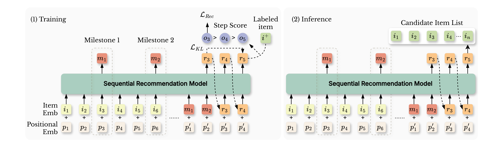
两边的底部都从历史物品向量和位置向量开始，原图用六件物品演示两段历史。编码器在两个窗口的末端各取一个里程碑，并把这两个连续向量作为新的位置放回历史尾部。橙色推理向量按顺序由模型生成，上一向量又连回下一输入的位置。左半边额外画出标签物品及各步分数，表明真实下一物品只在训练时用于比较推理步。图中用不等号示意中间步骤胜出，推荐损失直接施加于被选状态，同时从较好的中间状态向末态送蒸馏信号。右半边只有历史输入、里程碑和固定步骤生成的末态，候选列表从最右的状态获得排序。读图时需要把两个方向分开，里程碑和潜状态沿输入序列的时间方向传递，选步与 KL 则是在同一训练样本已算出若干状态后建立监督关系。它们不会把未来标签喂给历史编码器作为一个行为。图示也没有单独的预测步数网络或者早停模块，省掉标签分支不省掉右半边的多步计算。如果线上复用用户状态或 KV，变动的历史可能改变窗口末位置、位置编号和后续状态，图里的公共骨干并没有定义跨请求如何更新缓存。该流程图证明的是模块如何连接，所选状态是否真的更贴近末态、窗口是否比均值好，还要看后面的消融与最佳步差距。注意左图选步靠正例余弦，而计算蒸馏还要回到整组候选分布。前者决定教师索引，后者才能提供负例相对次序的信息。两个箭头在示意图里相邻，在实现里却对应一次逐状态比较和两次指定状态打分，记录它们各自的张量形状能减少复现时把损失接错位置的风险。
符号解释：$\mathcal L_{\mathrm{rec}}$ 让被选步对正例赋更高概率，$\lambda$ 控制其与末态蒸馏的相对权重，实验设为一。$\widehat y_{u,i}$ 是推理时最终向量的余弦排序分数。最优步推荐损失与基础式六的末态损失是两个模型定义，不应把两者都算到实际训练目标里。作者报告的温度在 ID 骨干为一、文本骨干为零点五。推理时只需对候选计算末态分数，无需算教师分布或回看真实标签。
符号解释：$C$ 为原始序列长度，$d$ 是向量维度，$L$ 是编码器层数，$M$ 为里程碑数，$T$ 为追加步数。三式分别是基础编码、原文给出的里程碑初始化增量和缓存旧键值后的推理累计复杂度。每步新增位置读取旧键值，因此注意力开销随上下文增长，缓存无法消除新增位置的前馈或读写。上述计算也没有包含候选全集点积、检索 RPC、动态批处理和设备调度，不能直接转成服务成本。文本骨干的物品编码使用外部大模型语义向量，报告的逐样本推理时间也不能替代目录文本编码和更新的维护开销。
3. 实验结果
3.1 数据构造、骨干和指标的比较边界
实验使用 Yelp、Amazon 的 Video & Games、Software、CDs & Vinyl、Baby & Products，以及 MovieLens-1M。评分高于三视为正反馈，再按数据源进行 k 核过滤与时间切分。Yelp 与 MovieLens 使用二十核，Amazon 四子域使用五核。按时间分割比随机分割更接近先有历史、再预测之后交互的任务，仍需确认编码、候选索引和任何物品侧统计没有提前读取测试窗。方法并未引入展示日志、未曝光记录或用户无意点击的区分。全目录排序避免了随机负采样过于简单的问题，然而离线目录中的真实正例只是已观察到的一项，未交互候选未必不相关。
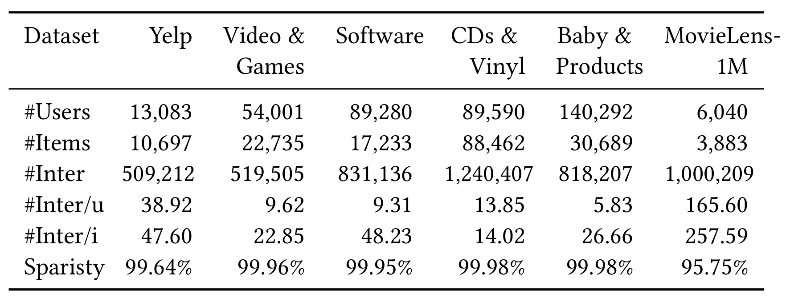
横向六列是数据集，纵向是用户、物品、交互量、每用户和每物品交互均值、矩阵稀疏率。Baby & Products 用户数十四万零二百九十二，平均每用户只有五点八三次交互。MovieLens-1M 则约六千名用户，每用户平均一百六十五点六次。Yelp 平均三十八点九二次，处在两者之间。CDs & Vinyl 物品数八万八千四百六十二，表中所列稀疏率接近百分之九十九点九八。较大目录会增加匹配负例和全目录蒸馏的计算，较短历史则可能根本凑不到一段完整的十行为窗口。这些差异解释了为何应按历史有效长度和物品规模复查机制，而不能用一个数据集的均值代表全体。尤其 MovieLens 的表内均值来自数据集整体，训练仍对每条样本截断到最多五十条历史，不能据均值把在线输入长度推定为一百六十多。表格也没有给窗口数量的分位数，因此无法从其均值反推 Baby 无里程碑的精确比例，或预估固定窗口影响多少测试请求。
ID 骨干是 SASRec 与 BERT4Rec，文本骨干是 UniSRec 与 MoRec。BERT4Rec 的历史段允许双向读已给定历史，推理段改用单向。文本骨干实验用 Llama-3.1-8B 编码物品文本，取最后隐藏状态的平均再做 PCA 到七百六十八维。这里的外部语义编码与推荐器内部二百五十六维设置是不同步骤，不能简单把大模型当作在线重排器。训练报告使用 Adam，学习率万分之一、批量五百一十二、每个样本历史最多五十条。不同文本骨干还可能有不同的输入处理和适配层。比较 DESRec 的机制增量，最直接的列是同一个骨干下的 Base、ERL、PRL 与 DESRec，而不是把一个文本增强方案和另一个 ID 骨干差值全部归给潜在推理。
指标是 Recall@10、Recall@20 与 NDCG@10、NDCG@20，表中乘一百显示。单目标时 Recall 表示该项目是否出现在截断列表内，NDCG 还按名次折扣，能够区分同样命中但排位不同的两组结果。主表使用星号表示作者报告配对 t 检验达到 $p<0.05$。星号没有替代方差或置信区间，缺少星号的格应只作为观察到的点估计。百分比提升采用与最强对照的相对变化，不能把分数增加零点二五写成增加百分之六点七九个百分点。若把 NDCG 数值还原到零到一范围，表中零点二五的差对应零点零零二五。
3.2 同骨干主结果与显式语言推理对照
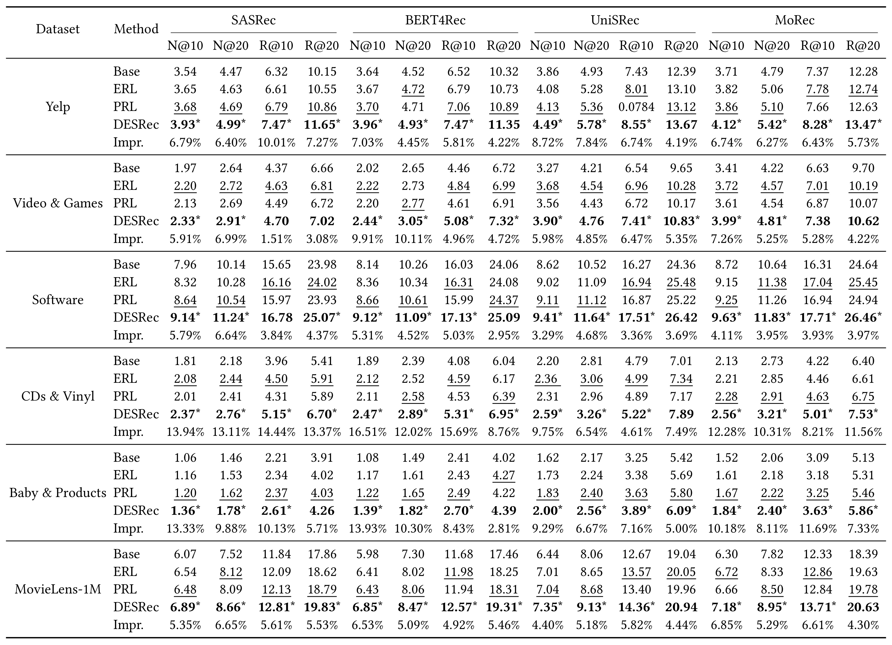
主表每个数据集有四种处理，先是未加潜在推理的骨干，再是 ERL、PRL 与 DESRec，末行给相对最佳对照的提升。每种处理横跨四种骨干，每个骨干又包含两个截断位置的 NDCG 与 Recall。Yelp 的 SASRec 列，NDCG@10 从基础的三点五四到 PRL 的三点六八，再到 DESRec 的三点九三，较 PRL 相对约百分之六点七九，绝对表值变化零点二五。CDs 的 SASRec 列是二点零八到二点三七，最强对照换成 ERL，相对百分之十三点九四。MovieLens 则为六点五四到六点八九，增量相对百分之五点三五。不同分母下，相对提升更大不必然代表绝对分数差更大。Baby 的 BERT4Rec 组，NDCG@10 从 PRL 的一点二二到一点三九并带星，Recall@20 从较高对照四点二七到四点三九，该格没有星号。读者可以分别关心上升覆盖面和有显著性标记的覆盖面。主表方向很一致，仍有一处明显录入风险：Yelp 的 UniSRec/PRL Recall@10 显示零点零七八四，同列其他行及全表标注均使用乘一百的尺度。可从旁边数值看出这格可疑，却无法确认源数据。笔记保留该显示值，并避免用它作为效果基线；该列相对增幅与较强的 ERL 行比较时也不需要依赖这格。主表支持同骨干离线增益，未报告服务流量的曝光、点击或长期留存指标。主表四骨干覆盖了两种输入形式，其中 BERT4Rec 的历史注意力方向也不同，支持模块可接入不同骨干。表中每个数据集均是同一任务的若干变体，不能把所有单元格当作独立重复试验。想解释改进集中在头部还是截断边缘，需要保留每个用户的真实名次转移。比如从第二十位进入第十位与从第五位升到第一位都会改变指标，但对召回覆盖与重排精度的意义不同。
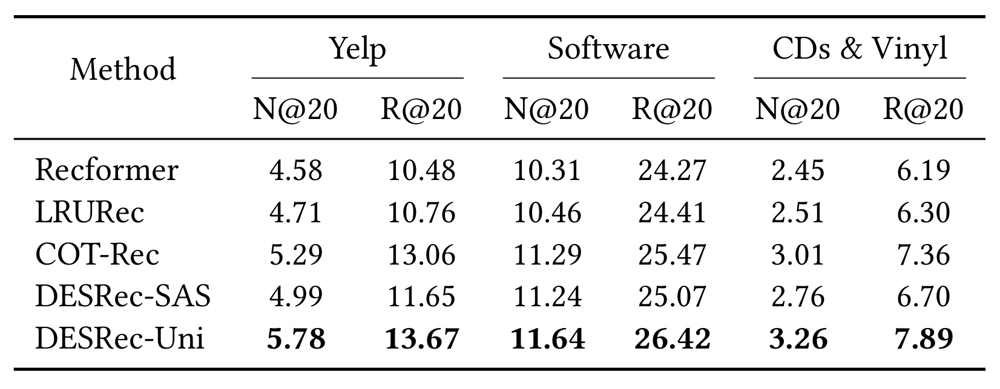
补充表把对照扩展到 Recformer、LRURec 和使用语言模型做显式偏好推理的 COT-Rec，列出 Yelp、Software、CDs & Vinyl 的 NDCG@20 和 Recall@20。Yelp 的 COT-Rec 为五点二九和十三点零六，DESRec-Uni 是五点七八和十三点六七。Software 的 Recall@20 是二十五点四七对二十六点四二，CDs 的 NDCG@20 是三点零一对三点二六。与此同时，DESRec-SAS 在三个数据集的两项指标都落后于 COT-Rec。表内实际支持的是带文本骨干的组合在这组任务中更高，无法把优势唯一归因于潜在而非显式推理。比较还有多处架构和训练差异，包括候选表示、语义输入以及基础模型。表格未为该对照配套给出同硬件、相同输入或同等线上推理成本，也未给这一组比较的重复运行方差。若希望回答用向量还是用自然语言更好，应从同一物品编码和固定预算起步，保留意图解释等显式方案独有的质量目标，再比较同一排名指标。表内也没有逐用户给出两种方案成功的交集，无法知道文本潜在向量与显式推理各自覆盖了哪些偏好案例。
3.3 消融与末态保真度
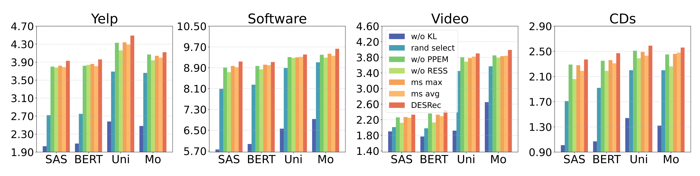
四个面板分别是 Yelp、Software、Video 和 CDs，横轴是四种骨干，纵轴是 NDCG@10。不同面板的纵轴范围不同，柱高适合比较同一面板内的同骨干组。去 KL 时训练仍以最佳步作推荐监督，但测试只能读最后一步，较低的蓝柱显示“学会选中间状态”本身未必能把信息留到输出。完全去掉 RESS 时，去掉最优步选择和蒸馏，推荐监督回到末态；它与仅去掉 KL 的实验定义不同，不能把两条柱子的差简单视为 KL 的单独收益。随机选步使用原训练结构但替换教师来源，图中一般落后完整方案，支持标签选择比随机教师更合适。去 PPEM 检查有没有里程碑时的差，窗口末态与平均池化、最大池化的对照则在保留窗口结构下检查怎么汇总。同一配方里几项变动存在交互，某一种删除后的降幅只是该组条件下的边际变化。四个数据集的柱状图也没有给逐点不确定性，结论以方向为主。若要严格衡量哪部分减少了浅层历史的过拟合，需要把三个开关交叉组合，并把最佳深度和历史长度作为分桶维度。
作者还比较每个测试样本事后找到的最优状态与最后状态。这里仍以真实标签相似度选最优步，选完再计算三个指标的保真差，所以该实验是在估计末态还落后于潜在上限多少。它与主表真正部署推理使用同一个末步的设定相容，但无法把事后最优步的成绩算进正式结果。文中使用的相对损失写为：
符号解释：$\mathrm{Best}$ 与 $\mathrm{Last}$ 是在按目标物品相似度选择的步骤与固定末步上评估得到的对应量。表同时给 NDCG@10、Recall@10 和标签余弦的相对差。分母跟随对照模型的最优状态数值，百分比更小表明同一条件下末态与其上限更接近，不能直接读成整体排名提高了相同百分点。若最优值很小，比例容易被分母放大。
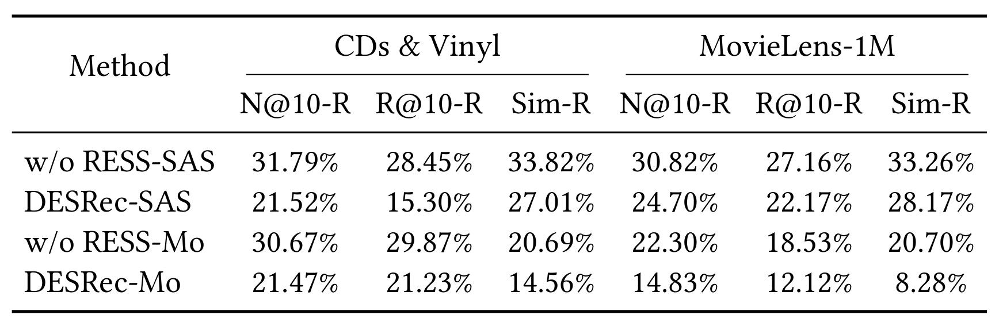
表四的左右分块分别是 CDs & Vinyl 和 MovieLens-1M，每块列出 NDCG@10、Recall@10 和标签余弦的最佳到末态相对损失。以 CDs 的 SASRec 为例，去 RESS 后三项依次是百分之三十一点七九、二十八点四五、三十三点八二，完整方法降到二十一点五二、十五点三零、二十七点零一。MovieLens 的 MoRec 标签余弦损失从二十点七降到八点二八，NDCG 的损失也从二十二点三零降到十四点八三。多个口径方向一致，支持末态保留了较多信息。数字仍普遍离零有距离，例如 CDs 的完整 SASRec 在 NDCG 上还差约五分之一，说明读出末态并未消除事后最优态的优势。由于表中每种变体按自身最佳状态取分母，若要判断末态绝对变强了多少，需要同时看该组的 Best 和 Last 绝对值，或对照主表实际排名。这里用到测试标签只为了诊断，不是把标签引入在线路径。结果也只覆盖两个数据集、两个骨干，无法为所有组合估计可追回的上限。若要与线上可部署策略相比，需补一个从已知历史预测退出信号的模型，再用相同测试前缀评估。
3.4 固定步、窗口与推理时间
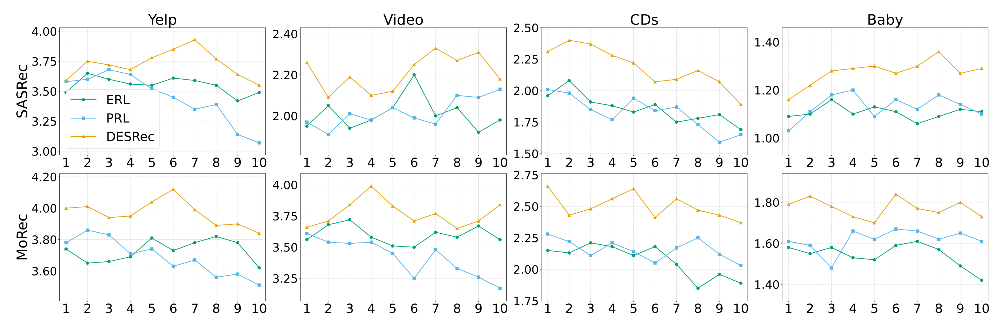
横轴是配置的推理步数一至十，三条线比较 ERL、PRL 与 DESRec 的 NDCG@10。按实际图面，上排 SASRec，下排 MoRec，列是 Yelp、Video、CDs 和 Baby。图注写四骨干和三数据集，与实际两行四列不一致，应该按可见面板陈述。Yelp 的 SASRec 曲线在第七步附近更高，继续往第十步走又回落。CDs 的 SASRec 则靠前的第二步附近已到峰值，随后整体偏低。Video 与 Baby 的较高点分别出现在另一组位置。作者说峰值多出现在六到九步，可以作为其对全部实验的概述，图中可见的反例提醒读者不能把这个范围当作通用默认值。尤其要把横轴理解为被试验的固定深度设定，曲线不表示线上逐用户在某个时刻被判断应退出。论文没有明确每个深度曲线点能否从同一训练快照截断得到，若拿它估计变更线上预算的即期损失，需要额外控制训练权重和推理截断。图中的基线深度也会波动，本文方法在较深处相对稳定并不意味着额外步骤必然单调改善。
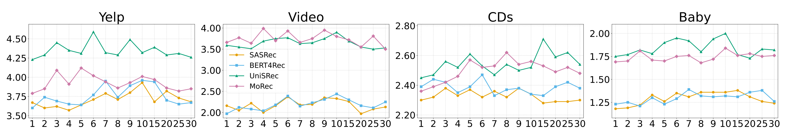
图六在 Yelp、Video、CDs 和 Baby 上分别比较四种骨干，不同颜色是模型而不是不同消融开关，横轴是窗口宽度。刻度一到十之后跳到十五、二十、二十五、三十，画面上的相邻间距不能当作相同的行为条数差。论文在这一实验规定步幅等于宽度，改变横轴会同时改变每窗涵盖的行为数、窗口之间的距离和里程碑总数。Yelp 的 UniSRec 在中小窗附近表现较好，CDs 中同一骨干在十五附近也有较突出的点。作者归纳五或十通常是较合适的折中，不能从图中推得它们在每个骨干都获最优。正文把过小窗口的一个问题说成相邻窗口过多重叠，但在这组 $D=w$ 条件下完整窗口并不重叠，较稳妥的解释是过多近邻汇总位置可能高度相似，带来冗余或噪声。要隔离窗口宽度与里程碑数量，应固定其中一个维度再做对照，并补上短历史余段处理方式。也可同时报告每个宽度下实际生成的里程碑数和单样本时延，判断峰值是否由少数长历史贡献。
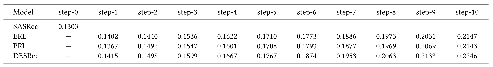
最后一表把 Yelp 上的时间写为单条测试样本平均毫秒，横轴从零步到十步。无推理 SASRec 为零点一三零三毫秒，DESRec 一步为零点一四一五，十步为零点二二四六。十步比无推理基础增加约零点零九四三毫秒，倍率约一点七二。ERL 与 PRL 十步分别为零点二一四七、零点二一四三，与本文方法在同深度的差约零点零一毫秒。读表时同时保留对基础模型与对潜在推理基线的两种比较，前者衡量引入这条链路的全部差，后者只反映同类配置之间差距。实验用单张 A800-80G，作者说每种设定测二十次。正文示例写约零点二二三毫秒，而十步表格显示零点二二四六，此处按具体表格数值。未报告并发下吞吐、尾延迟、候选跨服务传输或目录更新开销，也不能推断在不同序列长度下有同样的时间差。潜在状态虽比显式生成解释紧凑，原文未给与 COT-Rec 的等预算时间表；可明确的证据是当前单设备、单数据集和骨干配置下增加迭代带来的均值开销。
4. 总结
4.1 哪一部分值得带走
论文把样本个性化落实在两个可观察量上：历史长度决定能形成多少个阶段向量，训练标签决定哪个中间状态充当教师。服务端仍按固定步数推进。对已有序列排序模型，这允许保留用户状态单次产出和向量打分接口，只需在用户塔内部引入较长的状态生成链。最有区分度的设计是借助标签在轨迹内部构造一个教师，而无需维护外部更大教师。假如重复交互序列能让早期兴趣在不同步骤被重新激活，对整个候选分布蒸馏比只回归一个中间向量更贴近下游排序。主表和消融支持在选定数据上确有收益，但收益中还混有阶段摘要和更多前向计算，需要分别看同预算对照。
同一思路也适合研究个性化 Agent 的记忆读出。训练知道用户最终选中的物品或是否完成任务时，可在若干历史摘要状态之间选择相对有用的一步，再指导固定预算的末状态。是否迁移成功取决于下游目标的定义。用户在购物对话中的选择可能由库存、价格或页面顺序共同决定，一次点击给出的是观察标签，未必是稳定偏好的真值。保留选步前后的候选分布及错误类型，比只记录余弦或最终损失更能区分偏好表示改善和历史偏差复用。
4.2 局限与复现关注
- 训练选步指标的错位。 余弦只判断状态与正例有多接近，实际线上受负例名次及候选可用性影响。Figure 2 和训练选步用的判据不同，应报告两者的一致率和并列情况。
- 里程碑的边界与时序。 固定行为条数无法直接反映兴趣跨天或跨会话变化，短序列和不足一窗的尾部处理也未细述。BERT4Rec 的双向历史段允许使用完整已知前缀，复现时必须核对前缀与下一标签的隔离。
- 蒸馏的目录计算与梯度。 全目录归一化对大规模线上商品代价高。候选采样、温度以及教师是否停止梯度都会改变训练目标，缺作者独立实现佐证时不宜猜测。
- 离线结论与服务证据。 公开显式评分经过 k 核筛选，覆盖不了真实平台的即时供给和强反馈分布。Yelp 单样本均值仅给模型级成本参考，线上还缺并发、尾延迟与长期指标。原稿也有个别表值和图注口径疑点。
第一步可在相同骨干下固定目录与负例，对每条历史记录所有步的标签余弦、真实名次和最后一步分数，再按历史长度分桶。这样能核对选步收益来自正例上移还是难负例压低，也能量化早期最佳在后续被覆盖的样本比例。第二步同时做固定推理步和固定设备耗时的对照，控制目录版本、缓存复用与候选集，把删除 PPEM、仅去 KL、随机教师和末步教师放入同一实验矩阵，观察蒸馏与额外位置的交互。第三步在文本骨干中固定物品语义输入及时间切分，独立核对短历史余段、物品向量归一化和多步位置下标，复算表二异常单元格。最后把成功标准扩展到真实分流前的影子请求，分别观察多步用户编码、候选打分和端到端耗时，以免离线均值掩盖长历史和高并发请求的成本。